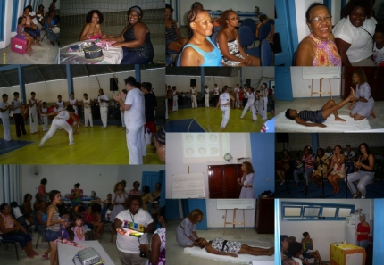
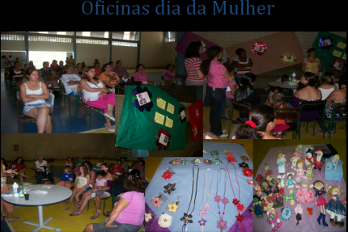
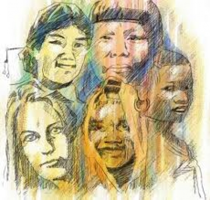

Projeto Ana
Ana:nome que significa paz e tranquilidade, cheia de graça, que tem compaixão clemência.
Sob a pressão familiar, social, profissional e pessoal, a população feminina está é na linha de frente, tanto do stress quanto da qualidade de vida. O mundo anda num ritmo insano e ancorado em valores questionáveis. As mulheres seguem com o dom de gerar a vida e com a missão histórica de cuidar dessa vida, denunciar injustiças, reivindicar e implantar mudanças.
A mulher identifica sempre o que precisa ser amado e regenerado. Por isso, soma as questões pessoais e profissionais a sua angústia com os problemas de sustentabilidade do planeta. Cresceu o número de mulheres chefes de família no Brasil, mas no aumentaram o número de horas que o homem dedica as tarefas domésticas. Hoje cerca de 52% das mulheres no mercado de trabalho estão contribuindo para a economia.
No dia a dia sobre carga de tarefas dispara a angústia,muito trabalho para pouco tempo. Este é o objetivo do projeto ANA desenvolver e ressignificar o papel da mulher na sociedade através de atividades culturais e de saúde com início na comemoração Dia Internacional da Mulher, mais com o objetivo de seguir reconstruindo.
2010

Atividades
Orientações de Saúde, Beleza e Qualidade de Vida.
Drª. Ruth Helena Manoel- Fisioterapeuta
Oficinade sabonetes artesanais
Mirna Graziella
Exposição de artesanatos
Casa de cultura de Araquari
Oficina de Beleza
Apresentações culturais:
• Capoeira - Grupo Berimbazu
• Show com o grupo
• Serena Flor
• Sorteios de Prêmios
Projeto Ana 2ª Edição
2011
Em 2008 foi aprovado pelo o governo federal o Plano Nacional de Política para Mulheres, resultado da mobilização de quase 200 mil mulheres objetivando diminuir a desigualdade entre mulheres e homens. Reafirmando a condição das mulheres como sujeitos sociais e políticos, com direitos à diversidade, segurança, preservando e valorizados seus conhecimentos tradicionais e sua cultura, exercendo assim sua cidadania com participação, vivendo a diferença e praticando a igualdade. Considerando e reconhecendo as políticas públicas nós da ACCAIA estamos realizando pelo segundo ano consecutivo o Projeto “ANA” que tem como objetivo a inclusão social da mulher, sua autonomia econômica e a igualdade no mundo do trabalho. Com orientações de saúde e beleza garantindo condições de vida à saúde das mulheres, bem como o enfretamento de todas as formas de violência, para que a mulher possa ter o poder de decisão em todos os espaços.

Atividades
Oficina de Fuxico
Profª. Marisa Caetano da Silva
Orientações de Saúde e Beleza
Fgª. Alaíde Honorato da silva
Oficina de Sabonete Artesanal
Prof. Mirna Grazziela
Oficina de biscuit
Prof. Telma Jacobina
Entrega de Brindes
Projeto Ana 3ª Edição
2012
Dia internacional da mulher

Data: 24/03/2012
Local: ASSOCIAÇÃO DE CARIDADE ABASSÁ INKISE NZAZI -ACCAIA – Loteamento Vicente
Horário: das 14h às 17h30min
PROGRAMAÇÃO
·
Copyright © 2011- Todos direitos reservados à ACCAIA
Rua Arildo Jose da Silva,99 - Itinga Joinville - SC - Cep: 89245000
::: Suporte 04791261971 :::
Editor on line